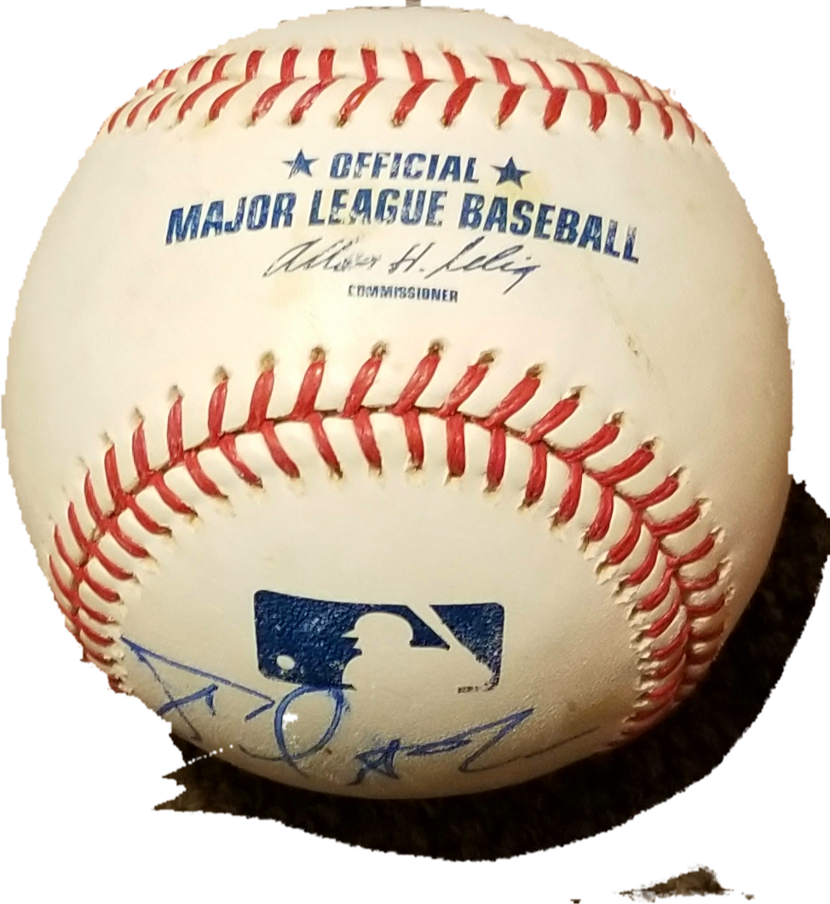
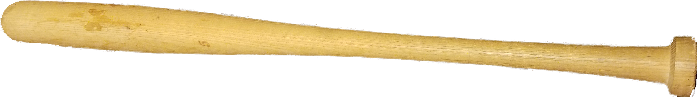

Learning Baseball Basics
Requirements
| 1. Baseball | 2. Glove | 3. Bat |
|---|---|---|
|  |  |
 |
Hi everyone, my name is Carlos Roldan. In my spare time as a hobby, I like to play baseball and when not playing, I enjoy watching the San Francisco Giants on television. I first began playing baseball when at the age of 9 years old a flyer of the San Francisco Junior Giants appeared at my neighborhood Recreation Center in the Bayview. I was intrigued and asked my parents for permission to join. They agreed that it would be great for me to join and I was off to learning the basics.
First, I began by learning the fundamentals of throwing and catching a baseball. Throwing a baseball will require
to have a baseball and a partner. Throwing a baseball requires to learn the proper form to throw a ball as not
to cause injury on your arm. This video demonstrates the correct way to throw a ball.
Click Here for Throwing Ball Video
Secondly, how to hit a baseball with a bat is crucial in playing baseball. To learn how to hit a baseball you will need a bat and a ball. Learning will require proper swinging technique so not to injure yourself. Swinging a bat will require you to use your hips to generate power and torque to swing. Here is a good video link to watch to practice proper technique.
Click Here to learn how to swing a baseball bat.
Hopefully after reading and watching the videos on this website you are ready to hit the field and begin playing.
With enough practice you may be the next Major League Baseball MVP !!!
{kind=link}
{kind=link}
{kind=link}
{kind=link}